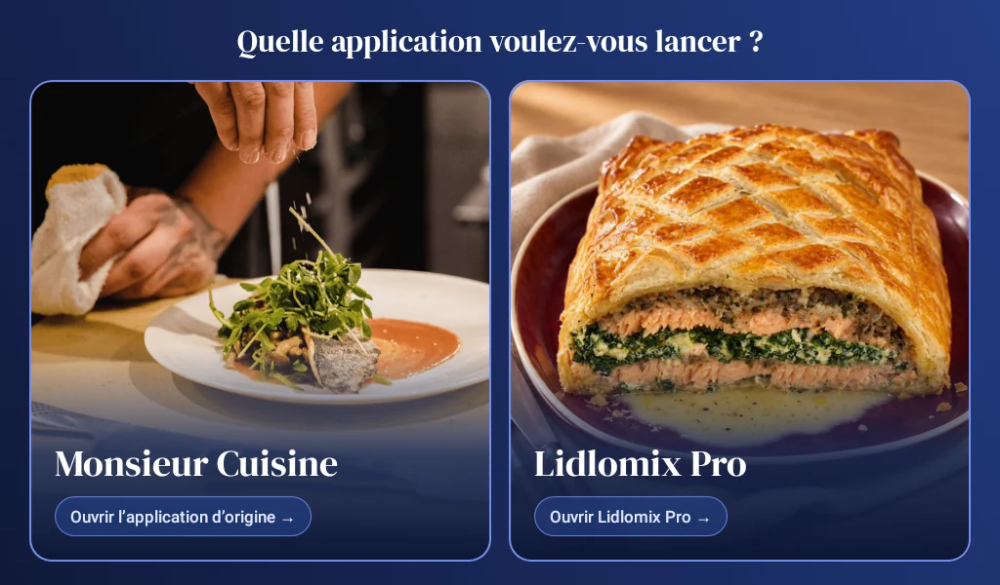
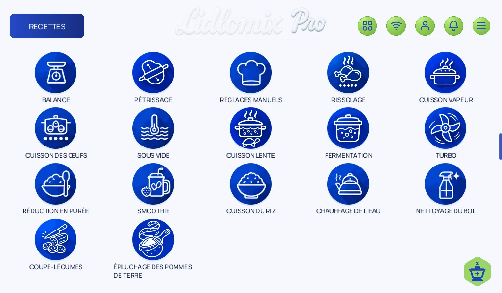

02 / Numéro 0,15 ·
Deux applications sur le même Connect
J'avais déjà commencé à écrire l'application, mais je n'avais toujours aucun moyen de la lancer sur le robot. J'ai trouvé une piste dans une vidéo de quelqu'un jouant à des jeux sur un Lidlomix.
La vidéo a également montré un moyen de se connecter à l'appareil. Ma connexion a continué à tomber pendant le travail, donc j'ai dû recommencer plusieurs fois. Une fois que Pro était en marche, je voulais garder l'accès à l'application de l'usine Monsieur Cuisine. Cela a conduit à un écran de démarrage avec deux tuiles. Je l'ai aussi testé après un redémarrage. Comment je me suis connecté à Android
1. Sélection des candidatures

Au début, j'ai dû éteindre et allumer le robot à l'interrupteur pour changer d'applications. J'ai ensuite ajouté un swipe à partir de la droite pour revenir au sélecteur d'applications, ainsi qu'une option de redémarrage dans le menu.
2. Menu Lidlomix Pro

J'ai redessiné les icônes du programme dans le menu principal. L'icône de la trancheuse montre les légumes de sorte que son but est clair en un coup d'oeil. Je suis toujours en train de concevoir et d'ajouter les icônes utilisées à l'intérieur des programmes individuels.
3. Annuaire hors ligne

Changer la langue dans l'application d'usine a également changé quelles recettes étaient disponibles. J'ai rassemblé des recettes de différentes éditions nationales dans un catalogue, les ai traduites en polonais et retirées des duplicatas. J'ai gardé des variantes pour les différents modèles et appliqué les lignes directrices de réglages que j'avais élaborées plus tôt.
Le test Connect montre 8 613 recettes stockées sur l'appareil. Vous pouvez rechercher et ouvrir les cartes de recettes hors ligne. Les résultats proviennent directement de la base de données locale, sans attendre pour télécharger une recette.
4. Recettes personnalisées Pro
Dans la version présentée, le catalogue adapté à Pro contenait 6 203 recettes.